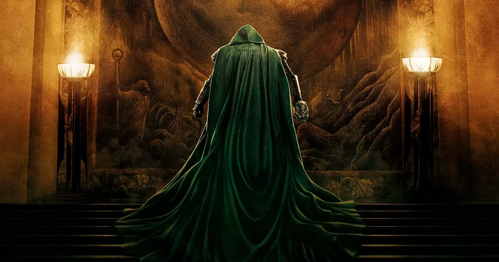
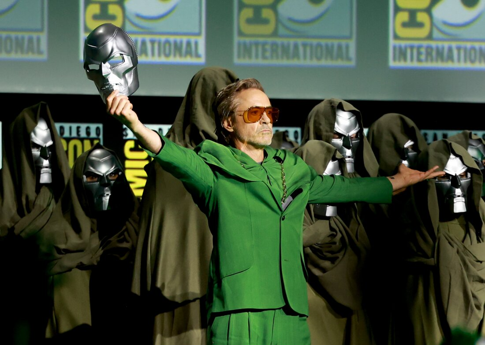

Destino final : novo vilão
Bem-vindo ao site dedicado a um dos grandes vilões do universo Marvel: Doutor Destino. O personagem ganhará destaque no novo filme Vingadores, com estreia prevista para dezembro.
Esta página foi criada para reunir informações,
curiosidades e conteúdos sobre o personagem e tudo o que envolve sua chegada ao Universo Cinematográfico da Marvel.
O site será dividido em três partes principais:
- Primeira parte: uma apresentação do próprio site, do personagem Doutor Destino e de Robert Downey Jr., ator que dará vida ao vilão.
- Segunda parte: uma análise sobre o time de Doutor Destino, seus aliados e as forças que estarão ao seu lado.
- Terceira parte: um mergulho em sua história e motivação, explorando o que leva Doutor Destino a se tornar uma das maiores ameaças que os Vingadores terão de enfrentar.
Prepare-se para conhecer mais sobre um dos personagens mais poderosos, complexos e perigosos da Marvel.

Robert Downey Jr está de volta
Robert Downey Jr. está de volta ao universo da Marvel! Mas, desta vez, ele não retornará como o lendário Homem de Ferro, Tony Stark.
O ator assumirá um novo e surpreendente papel: Doutor Destino, um dos mais icônicos e perigosos vilões
da Marvel.
Depois de anos marcando a história do MCU como Homem de Ferro, Robert Downey Jr. está pronto para dar vida a um personagem completamente diferente — trazendo uma nova fase, cheia de mistério, poder e grandes desafios para
os heróis da Marvel.